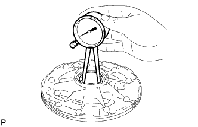
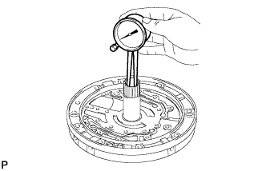
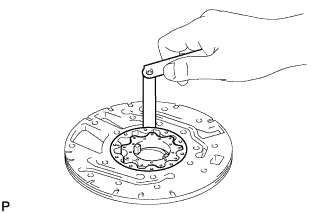
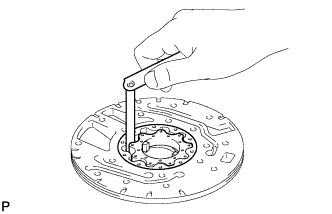
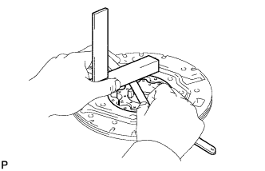
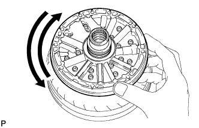

OIL PUMP > INSPECTION |
| 1. INSPECT FRONT OIL PUMP BODY SUB-ASSEMBLY |
 |
Using a dial indicator, measure the inside diameter of the oil pump body bush.
| 2. INSPECT STATOR SHAFT ASSEMBLY |
 |
Using a dial indicator, measure the inside diameter of the stator shaft bush.
| 3. INSPECT CLEARANCE OF OIL PUMP ASSEMBLY |
 |
Push the driven gear to one side of the body.
Using a feeler gauge, measure the body clearance.
 |
Using a feeler gauge, measure the tip clearance between the driven gear teeth and drive gear teeth.
 |
Using a steel straightedge and feeler gauge, measure the side clearance of both gears.
| Mark | Thickness |
| 0 | 11.636 to 11.642 mm (0.4581 to 0.4583 in.) |
| 1 | 11.643 to 11.649 mm (0.4584 to 0.4586 in.) |
| 2 | 11.650 to 11.656 mm (0.4587 to 0.4589 in.) |
| 3 | 11.657 to 11.663 mm (0.4589 to 0.4592 in.) |
| 4 | 11.664 to 11.670 mm (0.4592 to 0.4594 in.) |
| 5 | 11.671 to 11.677 mm (0.4595 to 0.4597 in.) |
| 6 | 11.678 to 11.684 mm (0.4598 to 0.4600 in.) |
| 4. INSPECT FRONT OIL PUMP DRIVE GEAR ROTATION |
 |
Place the oil pump body on the torque converter clutch.
Check that the drive gear rotates smoothly.
Remove the oil pump assembly from the torque converter.